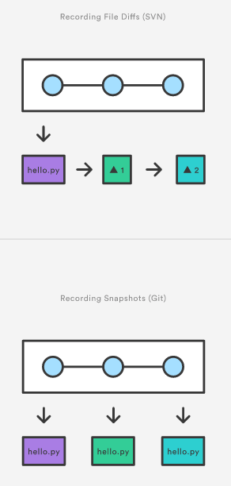

[译]git commit
git commit
git commit命令提交stage区的快照到项目历史中去（HEAD）. 被提交的快照被认为是一个项目的安全版本. Git不会修改他们, 除非你显示的要求了. 和git add一样git commit是Git最重要的命令之一.
尽管名字相同git commit和svn commit完全不一样. 快照被提交到本地仓储, 不会和其他git仓储有任何的交互影响.
用法
git commit
提交stage区的快照. 上面的命令运行后会自动打开一个文本编辑器让你写一些关于这次commit的描述. 填写后, 保存文件关闭文本编辑器才会真正的commit.
git commit -m "<message>"
这样就不会弹出一个文本编辑器了, 可以直接在commit命令中直接包含对这次commit的描述.
git commit -a
提交工作目录下面的所有修改过的文件. 注意了这些文件只包括已经被tracked过而且有修改的文件.
讨论
快照被提交到本地仓储. 这和SVN完全不同, 在SVN中working copy被提交到了中心仓储. 相反, Git不会强迫你和中心仓储交互, 知道你自己想这样做. 就如stage区是本地工作目录和项目历史（HEAD）之间的一个缓冲区, 每个开发者的本地仓储是他们的贡献和中心仓储的一个缓冲区.
SVN是直接commit修改到中心仓储. Git不同, git开发者有机会在他们本地的仓储中积累一些commit. 这样做比起SVN来说有许多好处:这样可以把相关的commits组织起来, 在push到中央仓储前清除本地的历史. 让开发者在一个完全独立的隔离的环境下工作, 推迟集成直到在一个恰当的时候.
快照, not differences
SVN跟踪的是文件的不同之处, Git版本控制模型是基于快照的. 例如, SVN commit由diff组成（与被添加到仓储中的原始文件相比）. Git纪录每次commit的每个文件的整个内容.

这种方式使得Git操作起来比SVN要快, 因为一个特定版本的文件不需要通过组装diff来产生--可以马上从Git的内部数据库中获得每个文件的完整的版本.Git的快照模型广泛影响于git的方方面面.
例子
下面的例子假设你已经有了一个文件hello.py, 他即将被commit到项目历史中去. 首先你需要使用git add把他添加的stage区, 然后commit这个stage区的快照.
git add hello.py git commit
运行后会打开一个文本编辑器要求你输入关于这次commit的一些描述, 同时还会列出哪些文件要被commit:
# Please enter the commit message for your changes. Lines starting # with '#' will be ignored, and an empty message aborts the commit. # On branch master # Changes to be committed: # (use "git reset HEAD <file>..." to unstage) # #modified: hello.py
Git不要求这个commit描述有特殊的格式, 但是一个好的经典的格式是在第一行用少于50个字符的文字概括这次commit, 然后空一行, 接下来详细的描述发生了什么修改. 例如:
hange the message displayed by hello.py - Update the sayHello() function to output the user's name - Change the sayGoodbye() function to a friendlier message